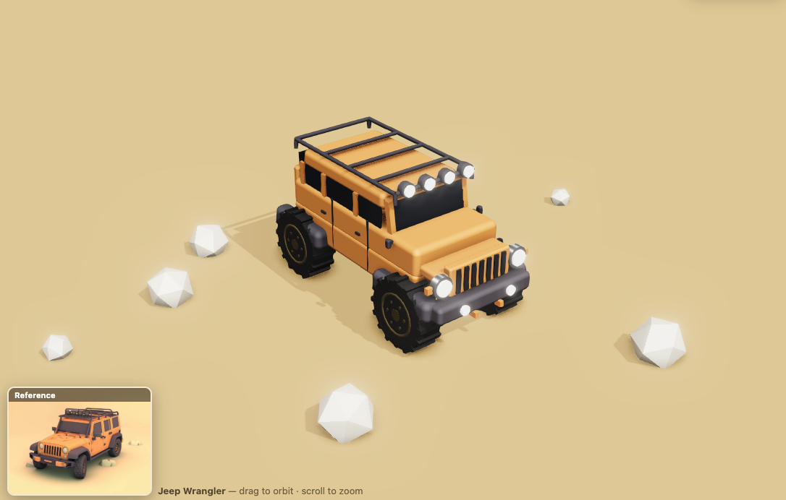
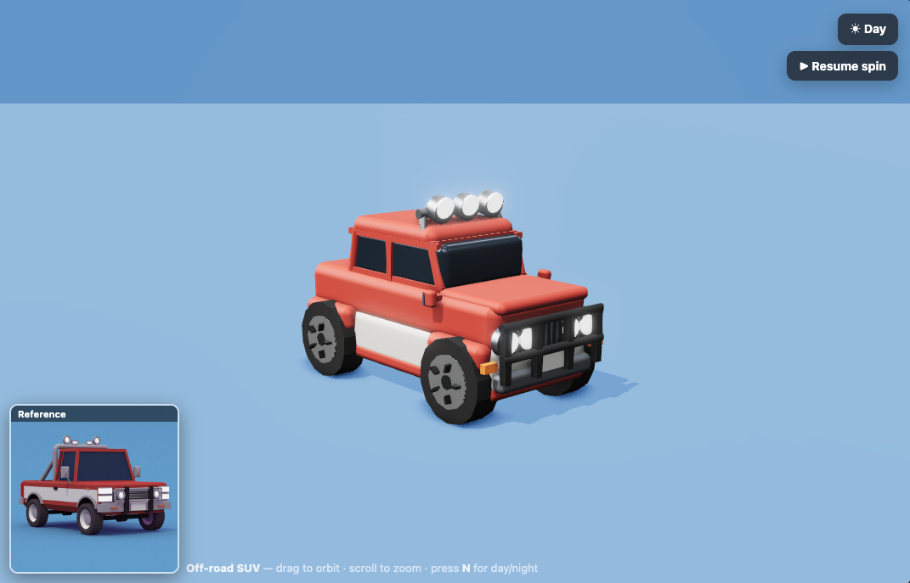

A Claude Code plugin that turns a single reference image into a code-only procedural Three.js model — geometry, materials and lighting generated entirely with code. Below are live example scenes, each rebuilt from one reference photo.
View the repository on GitHub →
Boxy 4-door Jeep — 7-slot grille, roof rack + spotlights, off-road tires, rear spare, warm desert scene.
Open live scene →
Drivable in the browser (WASD), with a day/night off-road mode — headlights and roof spotlights light the road.
Open live scene →